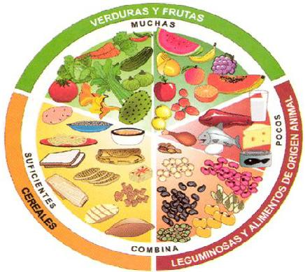

Una alimentación suficiente se manifiesta cuando la persona realiza normalmente las funciones de crecimiento, reproducción, trabajo, actividad mental y conservación de peso. Tanto la falta de alimentos como el exceso de ellos es perjudicial para la salud, por lo tanto deben consumirse las cantidades apropiadas dependiendo de la edad y la actividad física que se realiza.
| NUTRIENTES INSUSTITUIBLES | Aminoácidos esenciales |
| Ácidos grasos esenciales | |
| Vitaminas | |
| Minerales | |
| ADEMÁS | Agua |
| Fibras vegetales | |
| Hidratos de carbono |
Desayuna como rey. |
Come como principe. |
Cena como mendigo. |
| DESAYUNO | COMIDA | CENA |
| Al menos el 20 o 25% de las calorías totales de la dieta deben consumirse en el desayuno. Pueden consumirse cereales, leche (vacuna o de soja),frutos secos y frutas, y también complementos como germen de trigo, polen levadura, etc. |
Deben suministrar casi todo el resto de la energía necesaria, dejando poco para la cena. Se recomienda ensalada de horalizas, que aportan ácido fólico y minerales y un plato energético y proteico, como cereales y legumbres, pastas, etc. |
Las calorías que suministran los alimentos consumidos durante la cena no son consumidas por el organismo en su totalidad. Por eso es recomendable una cena liviana a base de frutas y verduras. |
Las cantidades de las sustancias que suministran energía deben guardar una correcta proporción. Los hidratos de carbono deben aportar entre el 55 y el 75% del total de la calorías. Esto equivale a una cantidad entre 275 y 374 gramos en una dieta de 2000 calorías. La energía aportada por las grasas debe ser menor al 30% del total, o sea un máximo de 66 gramos por día. Finalmente, las proteinas tienen que aportar cerca del 15% del total, para lo que deben consumir unos 75 gramos diarios. Adémas, el cuerpo necesita cantidades apropiadas de diversos minerales y vitaminas, que deben ser provistas por los alimentos.
Cada porción equivale a las siguientes cantidades.
Cereales: 1 rebanada de pan, 3 galletas, ó 1 taza de las de té de arroz, pasta o copos.
Verduras: 1 taza de hortalizas crudas, o verduras cocidas, o 1/2 de jugo de verduras.
Fruta: 1 fruta como manzana, naranja, etc. ó 1/2 de jugo de frutas.
Lácteos: 1 taza de leche o yogur, o 50g de queso.
Legunbres, frutos secos, huevos: Apróximadamente 150g.
|  |
|
||||||||||||||||||||||||||||